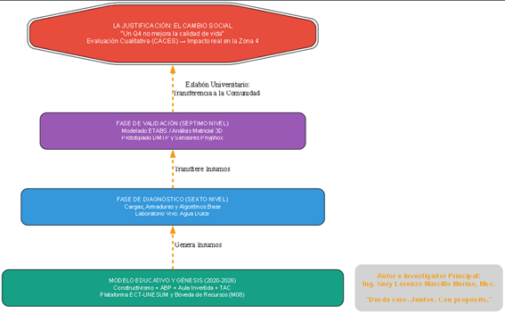

La evaluación es cualitativa y la justificación es el cambio social.
La Universidad no es una torre de marfil. Es el eslabón estratégico que conecta la ciencia con el territorio (Zona 4).
UN ARTÍCULO Q4 NO MEJORA LA CALIDAD DE VIDA.
La publicación academicista sin repercusión social es un "Q4 vacío".
LOS ARTÍCULOS CIENTÍFICOS REPERCUTEN CUANDO LOGRAN UN CAMBIO DE VIDA. Nuestros modelos (Sexto/Séptimo, Agua Dulce, DMTP) no llenan planillas; transforman la realidad.

El modelo ECT-UNESUM: De la base pedagógica al impacto real en la comunidad.